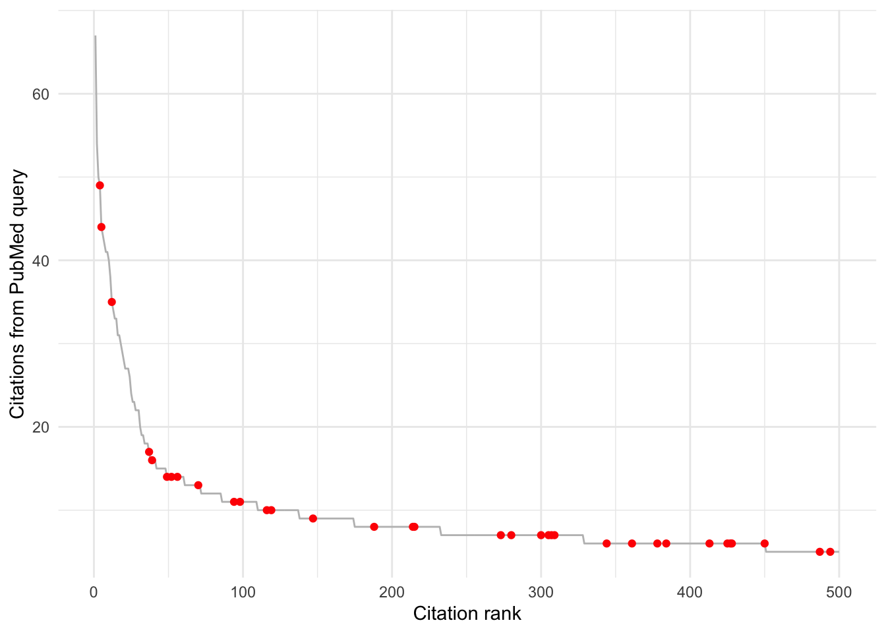

Code
pubmed <- readxl::read_excel(here::here("data", "pubmed-pruned.xlsx"),
sheet = 1) %>%
clean_names() %>%
filter(retained == "y") %>%
arrange(order)On 2023-02-10, I searched PubMed for "bio-logg*" OR biologg* OR biotelemetry, returning 970 results. I exported the results to data/pubmed-naive.csv. Manually pruning unrelated studies (e.g., biomedical or other life sciences) left 501 bio-logging studies.
Now I’ll try to use rcrossref to get the works cited by the first publication.
pubmed <- readxl::read_excel(here::here("data", "pubmed-pruned.xlsx"),
sheet = 1) %>%
clean_names() %>%
filter(retained == "y") %>%
arrange(order)one_work <- cr_works(dois = pubmed$doi[1])
one_refs <- one_work$data$reference[[1]]
one_refs# A tibble: 44 × 9
key first.page volume author year unstructured journal.title
<chr> <chr> <chr> <chr> <chr> <chr> <chr>
1 359_CR1 37 1 DP Armstrong 2008 Armstrong DP. Mo… Avian Biol R…
2 359_CR2 e13843 9 DP Armstrong 2021 Armstrong DP, Bo… Conserv Biol
3 359_CR3 609 29 DP Armstrong 2002 Armstrong DP, Sc… J Biogeogr
4 359_CR4 20 23 DP Armstrong 2008 Armstrong DP, Se… Trends Ecol …
5 359_CR5 180 1 DG Barron 2010 Barron DG, Brawn… Methods Ecol…
6 359_CR6 515 60 O Berger-Tal 2014 Berger-Tal O, Sa… Curr Zool
7 359_CR7 1801 41 C Bracis 2018 Bracis C, Bildst… Ecography
8 359_CR8 108239 238 CM Bubac 2019 Bubac CM, Johnso… Biol Cons
9 359_CR9 2157 365 F Cagnacci 2010 Cagnacci F, Boit… Philos Trans…
10 359_CR10 S7 14 I Carter 2017 Carter I, Foster… EcoHealth
# … with 34 more rows, and 2 more variables: doi.asserted.by <chr>, DOI <chr>Now all the works cited.
pubmed_cited_path <- here::here("data", "pubmed_cited.rds")
if (!file.exists(pubmed_cited_path)) {
works <- cr_works(dois = pubmed$doi)
pubmed_cited <- map2_dfr(works$data$doi,
works$data$reference,
function(work, refs) {
tibble(
citing_doi = work,
work_cited = refs$DOI
)
}) %>%
drop_na()
saveRDS(pubmed_cited, pubmed_cited_path)
} else {
pubmed_cited <- readRDS(pubmed_cited_path)
}What are the most cited? Red points indicate paper is in the original PubMed results.
cite_count <- count(pubmed_cited, work_cited) %>%
arrange(desc(n)) %>%
mutate(is_pubmed = map_lgl(work_cited, ~ .x %in% pubmed$doi))
with_rank <- cite_count %>%
mutate(rank = row_number()) %>%
slice(1:500)
ggplot(with_rank, aes(rank, n)) +
geom_line(color = "grey") +
geom_point(data = filter(with_rank, is_pubmed), color = "red") +
labs(x = "Citation rank",
y = "Number of citations") +
theme_minimal()
Fetch metadata for papers not in original query cited by 5+ papers in the original query (634 papers).
pubmed_cited_full_path <- here::here("data", "pubmed_cited_full.rds")
if (!file.exists(pubmed_cited_full_path)) {
cited_dois <- with(cite_count, work_cited[n >= 5 & !is_pubmed])
pubmed_cited_full <- cr_works(dois = cited_dois)$data
saveRDS(pubmed_cited_full, pubmed_cited_full_path)
} else {
pubmed_cited_full <- readRDS(pubmed_cited_full_path)
}
get_first_author <- function(author_col) {
map_chr(author_col,
function(author) {
result <- tryCatch(
author$family[1],
error = function(e) ""
)
if (!is.character(result)) result <- ""
result
})
}
get_all_authors <- function(author_col) {
map_chr(author_col,
function(author) {
result <- tryCatch(
paste(paste(author$given, author$family), collapse = ", "),
error = function(e) ""
)
if (!is.character(result)) result <- ""
result
})
}
pubmed_cited_full %>%
transmute(container.title,
created,
doi,
title,
type,
first.author = get_first_author(author),
authors = get_all_authors(author)) %>%
write_csv(here::here("data", "pubmed_cited_full.csv"))